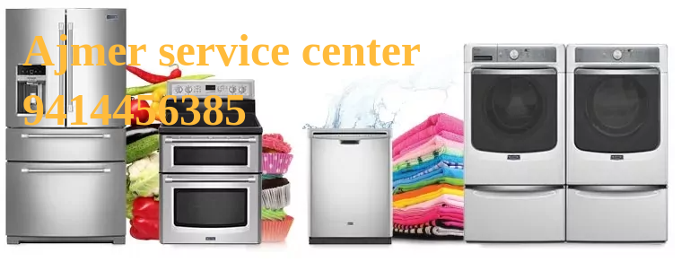

Home Appliance Repair Services in Ajmer Rajasthan
9414456385 9414456385 9414456385

Near by AC | Fridge | Washing Machine | Dishwasher | Microwave Oven | RO | TV repair service installation in Ajmer Rajasthan.We offer prompt and reliable services for out of warranty products on chargeable basis.
- AC Repair Service Installation in Ajmer Rajasthan
- Window AC Repair Service Installation in Ajmer Rajasthan
- Split AC Repair Service Installation in Ajmer Rajasthan
- Cassette AC Repair Service Installation in Ajmer Rajasthan
- Central AC Repair Service Installation in Ajmer Rajasthan
- Ductless Mini-Split AC Repair Service Installation in Ajmer Rajasthan
- Portable AC Repair Service Installation in Ajmer Rajasthan
- Floor Mounted AC Repair Service Installation in Ajmer Rajasthan
- Smart AC Repair Service Installation in Ajmer Rajasthan
- Inverter AC Repair Service Installation in Ajmer Rajasthan
- AC Gas Filling / Charging in Ajmer Rajasthan
- AC PCB Repair | Replace in Ajmer Rajasthan
- AC Compressor Repair | Replace in Ajmer Rajasthan
- Fridge Repair Service in Ajmer Rajasthan
- Single Door Refrigerator Repair Service in Ajmer Rajasthan
- Double Door Refrigerator Repair Service in Ajmer Rajasthan
- French Door Refrigerator Repair Service in Ajmer Rajasthan
- Side by Side Refrigerator Repair Service in Ajmer Rajasthan
- Top Mount Refrigerator Repair Service in Ajmer Rajasthan
- Bottom Mount Refrigerator Repair Service in Ajmer Rajasthan
- Fridge Gas Filling / Charging in Ajmer Rajasthan
- Fridge PCB Repair | Replace in Ajmer Rajasthan
- Fridge Compressor Repair | Replace in Ajmer Rajasthan
- Washing Machine Repair Service Installation in Ajmer Rajasthan
- Semi Automatic Washing Machine Repair Service Installation in Ajmer Rajasthan
- Fully Automatic Washing Machine Repair Service Installation in Ajmer Rajasthan
- Top Load Washing Machine Repair Service Installation in Ajmer Rajasthan
- Front Load Washing Machine Repair Service Installation in Ajmer Rajasthan
- Washer and Dryer Repair Service Installation in Ajmer Rajasthan
- Washing Machine Drum Repair / Replace in Ajmer Rajasthan
- Washing Machine Motor Repair / Replace in Ajmer Rajasthan
- QLED, OLED, LED, LCD, DLP, Plasma, CRT, Smart, HD, Full HD, 3D, 4K, 8K TV Repair Service Installation in Ajmer Rajasthan
- Dishwasher Repair Service Installation in Ajmer Rajasthan
- Solo, Grill, Convection Microwave Oven Repair Service in Ajmer Rajasthan
- RO Repair Service Installation in Ajmer Rajasthan
- Geyser Repair Service Installation in Ajmer Rajasthan
Washing Machine | Fridge | AC | Dishwasher | Microwave | LED TV | RO | Geyser Repairs in Ajmer Rajasthan
- Bluestar Service Centre in Ajmer Rajasthan
- Bosch Service Centre in Ajmer Rajasthan
- Carrier Service Centre in Ajmer Rajasthan
- Croma Service Centre in Ajmer Rajasthan
- Daikin Service Centre in Ajmer Rajasthan
- Electrolux Service Centre in Ajmer Rajasthan
- GE Service Centre in Ajmer Rajasthan
- GEM Service Centre in Ajmer Rajasthan
- Godrej Service Centre in Ajmer Rajasthan
- Haier Service Centre in Ajmer Rajasthan
- Hitachi Service Centre in Ajmer Rajasthan
- Hyundai Service Centre in Ajmer Rajasthan
- IFB Service Centre in Ajmer Rajasthan
- Kelvinator Service Centre in Ajmer Rajasthan
- Kenstar Service Centre in Ajmer Rajasthan
- Koryo Service Centre in Ajmer Rajasthan
- LG Service Centre in Ajmer Rajasthan
- Lloyd Service Centre in Ajmer Rajasthan
- Midea Service Centre in Ajmer Rajasthan
- Mitsubishi Service Centre in Ajmer Rajasthan
- Napoleon Service Centre in Ajmer Rajasthan
- Ogeneral Service Centre in Ajmer Rajasthan
- Onida Service Centre in Ajmer Rajasthan
- Panasonic Service Centre in Ajmer Rajasthan
- Philips Service Centre in Ajmer Rajasthan
- Samsung Service Centre in Ajmer Rajasthan
- Sansui Service Centre in Ajmer Rajasthan
- Sanyo Service Centre in Ajmer Rajasthan
- Sharp Service Centre in Ajmer Rajasthan
- Siemens Service Centre in Ajmer Rajasthan
- TCL Service Centre in Ajmer Rajasthan
- Toshiba Service Centre in Ajmer Rajasthan
- Vestar Service Centre in Ajmer Rajasthan
- Videocon Service Centre in Ajmer Rajasthan
- Voltas Service Centre in Ajmer Rajasthan
- Whirlpool Service Centre in Ajmer Rajasthan
- White Westinghouse Service Centre in Ajmer Rajasthan
FAQ
Q. AC Service Price in Ajmer Rajasthan?
Ans AC Service price is totaly depends on AC type whether it is Window, Split or Cassette. Normaly AC service charges are as 500 + parts and gas extra.
Q. Fridge repair charge in Ajmer Rajasthan?
Ans Fridge service charges depends on what problem you have in your fridge and fridge type.Generaly it is 500 + parts and gas extra.
Q. Washing Machine repair charge in Ajmer Rajasthan?
Ans Washing Machine service charges depends on what problem you have in your Washing Machine and Washing Machine type.Generaly it is 500 + parts extra.
Q. Microwave Oven repair charge in Ajmer Rajasthan?
Ans Microwave Oven service charges depends on what problem you have in your Microwave Oven and Microwave Oven type.Generaly it is 500 + parts extra.
Q. Dishwasher repair charge in Ajmer Rajasthan?
Ans Dishwasher service charges depends on what problem you have in your Dishwasher and Dishwasher type.Generaly it is 500 + parts extra.
Q. RO repair charge in Ajmer Rajasthan?
Ans RO service charges depends on what problem you have in your RO and RO type.Generaly it is 500 + parts extra.
Q. Geyser repair charge in Ajmer Rajasthan?
Ans Geyser service charges depends on what problem you have in your Geyser and Geyser type.Generaly it is 500 + parts extra.